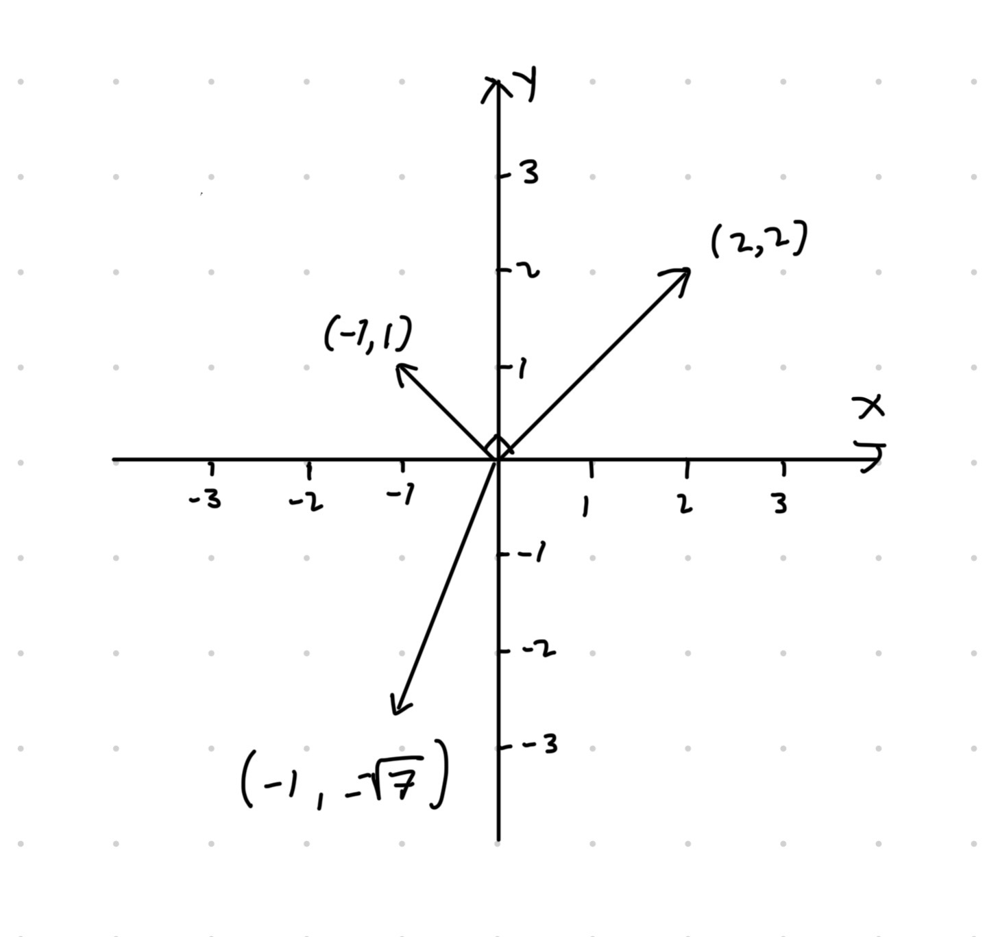

Luku 3 Liitteet
3.1 Vektoreista
Vektori (\(d\)-ulotteinen) on järjestetty lista lukuja \((x_1, x_2, \ldots, x_d)\), \(x_i\in\mathbb{R}\). Eli vektori voidaan tulkita avaruuden \(\mathbb{R}^d\) alkiona. Esimerkiksi \(2\)-ulotteiset vektorit voidaan piirtää pisteinä tai paikkavektoreina (nuoli lähtien nollasta päättyen vektorin määräämiin koordinaatteihin) tasossa \(\mathbb{R}^2\) kuten kuvassa 3.1. Samoin \(d\)-ulotteiset vektorit voidaan tulkita pisteinä avaruudessa \(\mathbb{R}^d\) mutta visualisointi muuttuu mahdottomaksi kun \(d > 3\). Korostamme vielä, että vektorien alkioiden järjestyksellä on väliä eli esimerkiksi \((1, 2) \neq (2, 1)\).
Huomautus (Vektorinotaatioista).
Joskus vektorit erotetaan luvuista lihavoimalla vektorit. Tässä monisteessa käytämme kyseistä periaatetta eli \(\boldsymbol x\) tulkitaan vektorina ja \(x\) lukuna.
Usein oletuksena vektorit tulkitaan pystyvektoreina. Sillä onko \(\boldsymbol x\) pysty- vai vaakavektori on merkitystä vektoreiden välisissä laskutoimituksissa. Muista, että notaatio \(\boldsymbol x^T\) tarkoittaa transpoosia, joka muuttaa vaakavektorin pystyvektoriksi ja toisinpäin. Eli esimerkiksi \((1, 4, 2.4)^T\) on \(3\)-ulotteinen pystyvektori \[\begin{equation*} \begin{pmatrix} 1 \\ 4 \\ 2.4 \end{pmatrix}, \end{equation*}\] joten monisteessa merkitsemme pystyvektoreita esimerkiksi notaatiolla \(\boldsymbol y = (4, 1, 8, 2)^T\).
Vektorin \(\boldsymbol x = (x_1, x_2, \cdots, x_d)\in\mathbb{R}^d\) suuruutta tai pituutta voidaan mitata sen normin \(\|\boldsymbol x\|\) avulla, \[\begin{equation*} \|\boldsymbol x\| = \sqrt{\sum_{i = 1}^d x_i^2}. \end{equation*}\] Yllä olevassa yhtälössä esitetty normi on nimeltään Euklidinen normi (eng: Euclidean norm), joka on yksi yleisimmistä normeista. Muitakin normeja on kuitenkin olemassa:
- \(\|\boldsymbol x\|_1 = \sum_{i=1}^n |x_i|\)
- Kyseiselle normille on useita nimityksiä kuten taksikuskin normi (eng: taxicab norm) ja Manhattanin normi (eng: Manhattan norm).
- Olkoon \(A\in\mathbb{R}^{d\times d}\) positiivisesti definiitti matriisi. Tällöin matriisia vastaavan käänteismatriisin \(\boldsymbol A^{-1}\) avulla voidaan määritellä normi \(\|\boldsymbol x\|_{\boldsymbol A} = \sqrt{\boldsymbol x^T \boldsymbol A^{-1} \boldsymbol x}\).
- Tätä jo hieman monimutkaisempaa normia käytetään esimerkiksi moniulotteisen normaalijakauman tiheysfunktion määritelmässä. Tällä kurssilla ei tarvitse tietää, mitä “positiivisesti definiitti” tarkoittaa. On kuitenkin hyvä huomata, että normin määritelmässä käytetty matriisi \(\boldsymbol A\) ei voi olla aivan mikä tahansa matriisi. Kuitenkin esimerkiksi luvussa 2.5 määritellyt kovarianssimatriisit ovat aina positiivisesti definiittejä. Kyseisen normin avulla laskettua vektoreiden \(\boldsymbol x\) ja \(\boldsymbol y\) välistä etäisyyttä \(\|\boldsymbol x - \boldsymbol y\|_{\boldsymbol A}\) tilastotietelijät kutsuvat usein Mahalanobisin etäisyydeksi (eng: Mahalanobis distance). Etäisyys on siis nimetty kuuluisan intialaisen tilastotieteilijän Prasanta Chandra Mahalanobisin mukaan.
Suuruuden lisäksi vektorilla on suunta. Työkalu vektorin suunnan määrittämiseen on pistetulo. Jos vektorin suuruutta mitataan Euklidisella normilla, niin kahden vektorin \(\boldsymbol x\in\mathbb{R}^d\) ja \(\boldsymbol y\in\mathbb{R}^d\) välinen pistetulo määritellään seuraavasti, \[\begin{equation*} \langle \boldsymbol x, \boldsymbol y\rangle = \sum_{i = 1}^d x_i y_i. \end{equation*}\] Erityisesti kaksi vektoria \(\boldsymbol x\) ja \(\boldsymbol y\) ovat suorassa kulmassa toisiinsa nähden jos ja vain jos \(\langle \boldsymbol x, \boldsymbol y\rangle = 0\).
Esimerkki 3.1 (Vektorin suuruus ja suunta)

Kuva 3.1: Vektoreita karteesisessa koordinaatistossa.